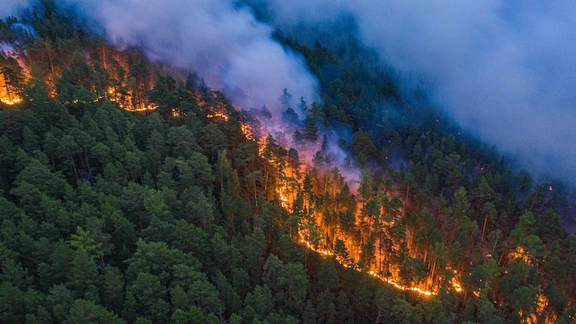

Latar Belakang

Pohon adalah tumbuhan yang dapat menghasilkan oksigen (O2) melalui proses fotosintesis agar tumbuhan pohon tersebut dapat membentuk kebutuhan makanannya. Untuk menjalankan proses fotosintesis, tumbuhan pohon perlu menggunakan karbon dioksida (CO2) yang biasa dihembus keluar oleh mahkluk hidup yang menghirup oksigen dari udara. Pohon juga merupakan bagian penting dari linkungan kita sebagai rumah tinggal beberapa mahkluk hidup dan juga sebagai bahan konstruksi rumah kita. Dapat dibilang bahwa tumbuhan pohon merupakan salah satu tumbuhan yang sangat penting untuk kelangsungan mahkluk hidup lain yang membutuhkan oksigen seperti kita. Akan tetapi, dengan sejalannya waktu, jumlah pohon dan hutan di dunia mulai berkurang. Mari kita lihat mengapa jumlah pohon berkurang!
Sebab
Penyebab dari berkurangnya jumlah pohon dan hutan dapat dibagi menjadi 2 kategori, yang disebabkan oleh manusia dan yang disebabkan secara natural. Jumlah pengurangan pohon yang diakibatkan oleh kegiatan manusia lebih besar dibandingankan pengurangan yang terjadi secara natural. Inilah beberapa penyebab-penyabab dari berkurangnya jumlah pohon dan hutan yang ada di Bumi kita:
Sebab Manusia
Manusia memerlukan pohon untuk banyak hal, dan salah satunya adalah sebagai bahan bangunan (kayu yang didapatkan dari pohon) dan juga bahan bakar. Agar manusia dapat kayu yang banyak untuk pembangunan infrastruktur dan hal lain seperti furnitur rumah, mereka memotong pohon dengan jumlah yang banyak sehingga akibatnya hutan-hutan, yang membutuhkan waktu bertahun-tahun untuk tumbuh, menjadi gundul.

Beberapa orang juga mendapatkan mata pencaharian mereka dari buah-buah dan hal-hal lain yang dihasilkan oleh beberapa jenis pohon. Tetapi mereka tidak selalu mendapatkan buah-buahan dari pohon, mereka juga membutuhkan sayuran dan buah yang datang dari tumbuhan-tumbuhan lain. Untuk hal tersebut, manusia terkadang membakar hutan-hutan agar mereka dapat membuka lahan pertanian. Pembakaran hutan seperti ini juga terkadang dilakukan agar abu yang dihasilkan dapat digunakan untuk menghasilkan tanah yang subur agar hasil pertanian bisa lebih baik. Tetapi tidak semua kebakaran hutan diakibatkan oleh manusia secara sengaja, terdapat kejadian juga dimana manusia dengan tidak sengaja membakar hutan akibat rokok, atau perkemahan yang tidak diawasi.
Sebab Natural
Terkadang tumbuhan-tumbuhan yang sudah mati dan menjadi kering dapat mengakibatkan kebakaran hutan. Biasa hal tersebut didukungi oleh kondisi cuaca dan udara yang kering. Pada saat kondisi tersebut vegetasi hijau dapat menjadi bahan bakar. Kekeringan juga dapat mengakibatkan pohon-pohon untuk mati sehingga jumlah pohon berkurang. Jumlah pohon yang berkurang sebanding dengan keburukan dari kekeringan.
Akibat
Salah satu hal yang pernah dibahas oleh artikel ini adalah bahwa pohon menghasilkan oksigen[ref]. Oksigen yang dihasilkan oleh pohon-pohon sangat penting bagi atmosfer dan juga binatang hidup. Atmosfer kita terdiri oleh satu lapisan yang dinamakan "Lapisan Ozon". Lapisan tersebut berfungsi agar Bumi dapat terlindungi oleh sinar ultrviolet dari matahari dan juga mengatur suhu Bumi agar tidak menjadi terlalu panas.

Tetapi dengan peningkatannya polusi udara dan berkurangnya jumlah pohon, lapisan Ozon telah mulai menipis yang mengakibatkan perubahan iklim. Perubahan tersebut telah mulai mencairkan es di kutub Utara dan juga kutub Selatan. Binatang-binatang yang tinggal di dunia es tersebut, sekarang harus terpaksa berenang jauh-jauh agar mereka dapat menemukan es untuk beristirahat. Selain dari binatang yang tinggal di kutub Utara dan kutub Selatan. Binatang yang menghuni di hutan atau pohon juga terancam akibat berkurangnya jumlah pohon. Contohnya adalah satu spesies burung, yang difiturkan di film "Rio", "Spix's Macaw", telah dinyatakan punah pada tahun 2018, akibat pohon yang penting untuk spesies mereka telah hilang.
Kegiatan memotong dan membakar pohon oleh manusia telah membuat mengurangkan area perpohonan di Eropa Barat dari 80% menjadi 34%., America Utara telah memotong setengah dari perpohonan yang ada, dan Cina hanya mempunyai sisa 20% dari perpohonan dulunya.
| Nomor | Tempat | Area Perpohonan Tersisa |
|---|---|---|
| 1. | Eropa Barat | 34% dari 80% |
| 2. | America Utara | 50% dari 100% |
| 3. | Cina | 20% |

Selain dari binatang saja yang terancam, kita pun juga terancam dengan adanya virus Nipah yang tertimbul akibat pembakaran hutan untuk lahan. Pembakaran tersebut mengakibatkan buah-buahan, yang merupakan makanan kelelawar, untuk tidak tumbuh sehingga kelelawar-kelelawar tersebut mencari makanan di tempat yang baru. Kelelawar-kelelawar tersebut membawa virus berbahaya yang dengan tidak sengaja disebarkan ke babi dan akhirnya ke kita, manusia. Tanah yang dulu juga ditahan oleh perpohonan yang ada diatasnya sekarang lebih rentan terhadap erosi yang akibatnya meningkatkan kemungkinannya terjadi tanah lonsor pada daerah pegunungan.
Selamatkanlah Pohon Kita
Kamu dapat membantu menyelamatkan pohon dengan mengikuti beberapa cara yang terdapat dibawah ini:
-
Membantu Menanam Pohon
Dengan berkontribusi dengan menanam pohon kita dapat satu per satu, menumbuhkan kembali pohon-pohon yang kita telah gunakan. Jika kita dapat mengajak banyak orang untuk mengikuti kita, kita dapat menanam lebih banayak pohon.
-
Mengikuti Kampanye untuk Melestarikan Pohon
Kampanye-kampanye seperti biasa menjalankan kegiatan untuk meningkatkan kesadaran tentang berkurangnya jumlah pohon. Mereka akan pasti membutuhkan voluntir sehingga kita juga dapat membantu dalam kegiatan mereka yang biasa dapat merupakan menumbuh pohon.
-
Berhenti Membuang Sampah Sembarangan
Sampah yang kita buang dapat mengakibatkan polusi dan menurunkan kualitas air yang dapat membunuh pohon. Selain itu, polusi tersebut dapat mempercepat perubahan iklim yang dapat mengakibatkan kekeringan dan meningkatkan kemungkinan terjadinya kebakaran hutan secara natural.
-
Membeli Produk yang Ramah Lingkungan
Produk yang biasanya ramah lingkungan atau ramah hutan biasa diproduksi melalui cara-cara yang ramah dengan lingkungan sehingga jika kita dapat meningkatkan permintaan produk dari produsen yang ramah lingkungan, kita bisa dapat mengalternativekan metode produksi produsen lain ke metode yang lebih ramah lingkungan dan tidak merusak lebih banyak pohon.